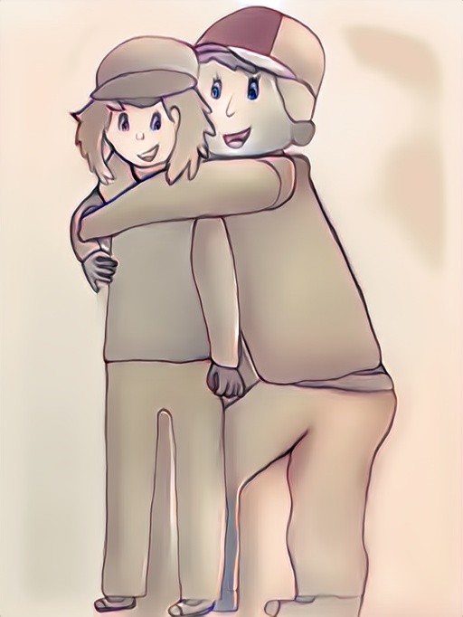

C'est parti pour l'aventure !
Léonard et Valentine souhaitent comprendre le monde informatique qui les entoure.
Ils explorent de nouveaux horizons à la recherche de réponses aux questions suivantes :
- Qu'est-ce qu'un ordinateur ?
- De quoi est-il composé ?
- Comment foncitonne-t-il ?
- Comment peut-on communiquer avec lui ?
- Comment peut-on lui demander de résoudre des problèmes ?
- Comment résoud-il ces problèmes ?